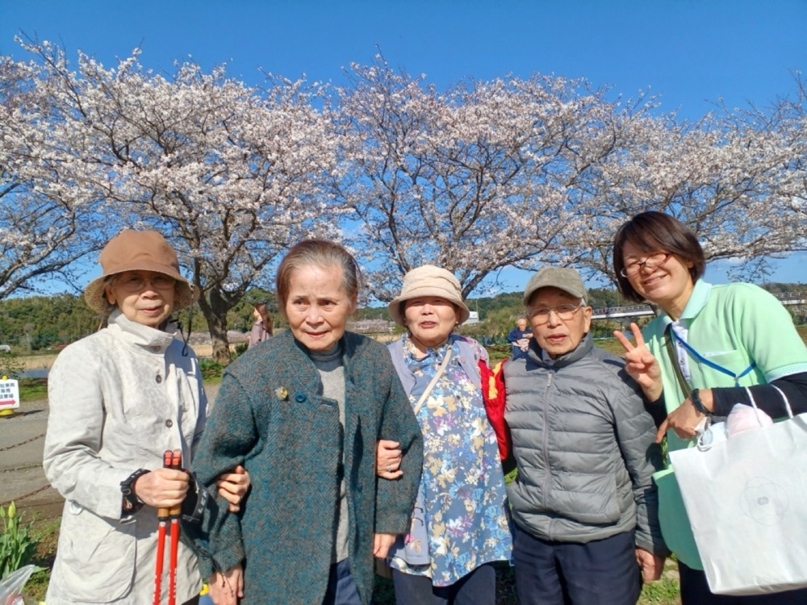
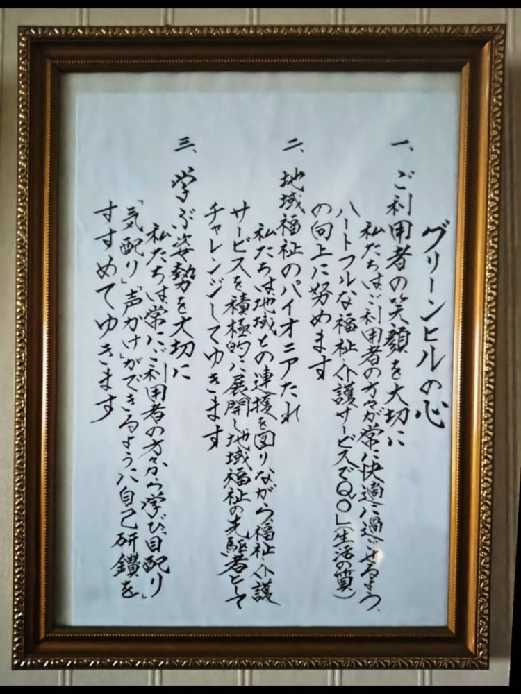
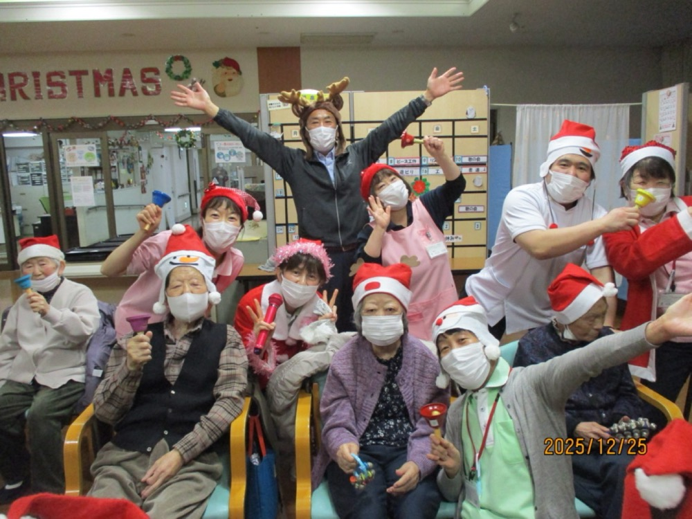
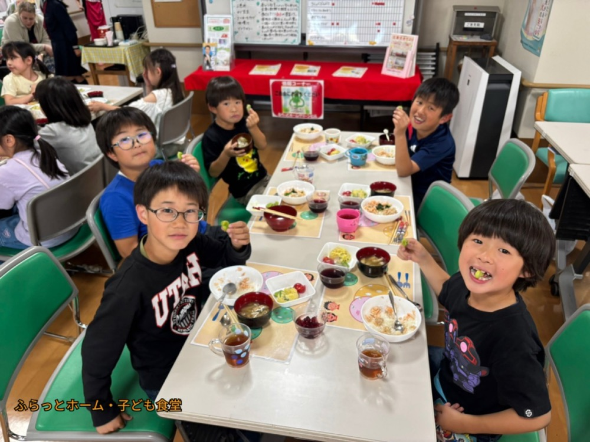

父の背中を追って診療所から始まった「奉仕」の心
津川 恵美子
社会福祉法人 翠燿会 理事長
千葉県八千代市出身。地域医療の礎を築いた朝戸家５人きょうだいの長女として生まれ、幼少期より医療・福祉の現場を身近に育つ。大学で社会福祉を専攻後、精神科病院でのソーシャルワーカー勤務を経て父が開設した社会福祉法人翠燿会に入職。平成10年、3８歳で理事長に就任。 介護保険制度施行前より、地域ニーズに応じたデイサービスやショートステイの拡充に尽力。同窓の夫である常務理事と共に「選ばれる施設」を目指し、接遇マナーの向上や理念共有のための『グリーンヒルの心』、『クオリティブック』を導入するなど、組織改革を推進した。現在は、外国人介護人材の積極的な採用・育成や、放課後等デイサービス、自立援助ホームの開設など、時代の変化に合わせた多角的な福祉事業を展開している。
企業サイトを見るTRACK 01
父の背中を追って診療所から始まった「奉仕」の心

翠燿会の歴史は今から60年以上前の昭和37年にまで遡る。津川理事長の父が開設した「朝戸医院」がその原点だ。当時はまだ八千代市が「千葉郡八千代町」だった時代。現在の八千代台の施設から歩いて数分の場所に産声を上げた小さな診療所はその後「朝戸病院」となり、地域の人々の命と健康を守り続けてきた。
「父が生きていれば97歳、母は94歳で今も元気です。父たちが築いた土台の上に、今の私たちがあります」
医療から始まった朝戸家の事業は時代の変化とともに福祉の分野へと広がっていく。昭和56年、八千代市で初となる特別養護老人ホーム「グリーンヒル」を開設。昭和61年には千葉県初のデイサービス事業を開設し、その後、隣接地には弟が院長を務めるセント・マーガレット病院が開院し医療と福祉が連携した「グリーンヒル」のエリアが形成された。
TRACK 02
「入り口は笑顔」 心の羅針盤 『グリーンヒルの心』 と 『クオリティブック』

60年以上の歴史の中で、組織が大きくなっても変わらないものがある。それは「心」だ。『グリーンヒルの心』という行動理念の標語があり、毎月の朝礼で読み合わせを行っている。また、翠燿会では全職員が携帯する『クオリティブック』という小冊子がある。これは法人の行動指針をまとめたもので、職員ひとりひとりに配布している。
その中でも津川理事長が特に大切にしているのが「笑顔」だ。 資格のあるなし、よりも「入り口は笑顔」、「技術は後からついてくる」と年に２回の新人研修では伝える。
「私たちの施設にいらっしゃるお客様は、ご自身やご家族のことで何らかの不安や悩みを抱えて来られます。だからこそ、スタッフの笑顔と挨拶が何より大切です」


TRACK 03
国境を越えた“家族”の絆 外国人スタッフと共に
現在、介護業界は未曾有の人材不足に直面している。「新卒の日本人の若者が介護職を目指すことが少なくなってしまった」と津川理事長は現状を憂う。しかし、翠燿会ではそのピンチをチャンスに変え、新たな活力を生み出している。それが、外国人スタッフの活躍だ。
現在、翠燿会ではベトナム、ミャンマー、フィリピン、インドネシア、ペルー、スリランカなどから約10名の外国人スタッフを受け入れている。「彼女たちは本当に優秀で、努力家です」
「彼女たちが日本の国家資格である介護福祉士の試験に受かるよう、私たちも全力でサポートします。」